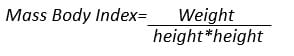

Goal of the Project: We used data that was a mix of synthetic and authentic data collected from Colombia, Peru, and Mexico to predict obesity levels depending on some environmental and behavioral attributes. This analysis could enable a deeper understanding of obesity prevalence and expected incidence.
The data was obtained from UC Irvine Machine Learning Repository which can be accessed here.
23% of the data was collected online via survey, while the remaining 77% was generated synthetically using WEKA and SMOTE. Further data synthesis information can be found on the Repository site. This prior data cleaning and synthesis was really helpful in balancing out the attributes and controlling over-representation.
Total Count = 2111
Independent Variables:
Other Variables: Gender, Age, Height, and Weight.
Dependent Variable: [NObesity] was created with the values of: Insufficient Weight, Normal Weight, Overweight Level I, Overweight Level II, Obesity Type I, Obesity Type II, and Obesity Type III.
The Body Mass Index (BMI) is calculated as the weight in kilograms divided by the square of height in meters:
BMI = Weight (kg) / Height (m)2
Video visualization of data analysis and findings.
Purpose and Situation: We will review and examine the business model and past data to determine if e-cars could potentially generate higher profits through auto car loans. According to the case study, e-car has encountered difficulties in obtaining loan acceptance from potential customers. Upon reviewing the case data, it became apparent that e-cars were offering considerably higher interest rates to customers deemed risky, placing them in a higher risk tier. We believe that e-car may have been overpricing its loans, significantly exceeding market rates for car loans. In today's competitive business landscape, e-cars must competitively price their offerings while also mitigating risk and minimizing losses.
Upon brief data exploration, it became evident that the acceptance rate of e-car loans was unusually low. Out of the 208,077 loans offered, only 45,785 were accepted, resulting in a 22% acceptance rate. We propose that e-car's objective should be to achieve an acceptance rate of over 50%. Several areas for improvement have been identified:
1.Increasing the number of customer segments to better tailor prices and risk factors.
2.Optimizing the term by observing trends and preference of accepted loans.
3.Establishing an optimal price point those balances profit margins with transaction volume.
We have decided to address this issue using both value-based and cost-based pricing strategies. Value-based pricing entails quoting fair prices and providing seamless service from start to finish. Cost-based pricing will enable us to determine the best pricing strategy, ensuring that we neither miss opportunities by overpricing nor undercut potential profits by underpricing the loans.
After exploring the data further, we were able to gain more insight into the possible areas of improvement. With so many factors to consider, e-car needs to identify what are the important factors in decision making while customers are shopping for car loans.
a.Considering lowering APR to match competitor’s rate, general market rate.
b.Offer Longer terms on loans.
c.Make “new” car loans attractive since that was the least accepted loan type.
d.Offer more online and billboard ads to retain customers.
Out of all these factors, rate and loan terms are something that e-car can control directly and by changing the parameters we were able to get insight, predict and estimate possible revenue for e-car. After estimating and predicting the acceptance of each loan we can attempt to optimize the pricing by using parameters from our preferred model. In seeking to validate our hypothesis that the "Interest rate has a causal effect on the decision made by customers," we propose employing causal inference and estimating the effect of manipulating the rate (APR).
We are proposing to use the methods below to predict loan outcomes and optimize the pricing better to maximize returns. Models we attempted are below.
Cleaning Data set and Training Causal Model: The dataset contains 208077 data sets. After cleaning the data and observing trends (see the code submitted for data cleaning and observed insights), we divided the dataset to three equal parts n= 69363 per group. Partition1 was utilized to train the IVSLS model using the factors we mentioned above. Partition3 and partition2 were used as treatment and control sets respectively. We choose to consider tier, Car Type, Amount, Competition Rate and IV variable [Rate ~ Season] to train our model. The model yielded R^2 value of 0.81 and Accuracy was 88.8%. Once the model was trained, we moved on to our experiment section. Code base will be submitted with the package.
Experiment: Based on the Nomis solution case suggestion we decided to segment our data further to 8 (using the median as the breaking point) Tiers then treat each loan in the tier with varying rates. The baseline acceptance rate was 26.10% and 23.3% for our experimental (treatment) and control groups respectively. The samples were assigned randomly, and we decided to not manipulate the data further to avoid biases. We decided to start by matching the competitor’s rate (general market rate) form tier 3- 8 initially and vary the rate to optimize it better. We found that matching the competitors rate yielded ~75% acceptance rate and thus we had room to quote a bit higher to minimize risk and still meet our goal of >50% acceptance rate. Finally, we decided to match the market rate for new cars but add two value +2% for the other cars (refinance and used). The final acceptance rate was 66%.
Per the project instructions we calculated profit in one segment, segment 4, for demonstration. We simulated treatment as mentioned above by segmenting the tiers into eight segments, setting the price at the market rate for new cars, price for used and refinance was set at competitor rate +2 and normalized term 45-70months (most accepted loans were in that range). Regarding term, we suggest that customers will be given term options in that range, with more options for customers in lower tier. For this experiment’s purpose, we just normalized the initial value. Following that calculated expected interest earning, Total cost, expected loss, probability of default (Risk) and the final net profit. See Appendix for formulas used.
The findings of our analysis revealed a substantial increase in the overall acceptance rate from 22% to 66%, consequently leading to a notable improvement in the total profit margin. The logistic regression model resulted in ~32% increase with the same treatment. Our strategy primarily targeted securing acceptance of quotes, thereby amplifying our net profitability. Focusing on a specific tier, namely Segment 4 (n=7704), initially yielded a profit of $9.5 million, exclusive of any projected losses or forfeitures. Following adjustments to the interest rates and loan durations, Segment 4 witnessed a surge in profitability to $41.1 million, prior to factoring in expected losses. Accounting for expected losses, the net profit estimate settled at $12.7 million.
In summary, our consultancy recommends e-car to vigilantly monitor prevailing market rates and strive to align their loan offerings accordingly. Additionally, optimizing the duration of loan terms and refining segmentation strategies could further boost the acceptance rate. Despite the inherent risks of default that come with lowering rate price, our analysis demonstrates a significant increase in net profit as acceptance rates improve with even when factoring the probability of default. Prioritizing the acquisition of potential customers not only elevates acceptance rates but also augments revenue per accepted quotation.
To conclude, it is critical to acknowledge that the dataset utilized comprises one year of sales records. Access to a more extensive historical data set could provide deeper insights. Therefore, continuous evaluation, prediction, and estimation are essential for the efficacy of marketing and pricing models. Furthermore, it is crucial to replicate this experiment multiple times to ascertain its validity and applicability.
1. Profit and Risk Formulas used.
Welcome to my ongoing journey with the Open-Sora AI video generator model! As a tool that connects the power of artificial intelligence to transform text into video, Open-Sora is nothing short of revolutionary. It's particularly designed for those of us who aren't pros in video editing but need to churn out high-quality educational or promotional videos. The AI takes over the heavy lifting, managing everything from scene transitions to text overlays, all while making the video production process a breeze for a broad audience.
After dabbling with several models available on platforms like Hugging Face and GitHub, I found the initial excitement of generating videos started to fade. This led me to a pivotal decision: to dive deeper into the inner workings of video generation models. My goal? To not only understand but also to potentially enhance the architecture of these AI models. This exploration isn't just for kicks; it's aimed at making substantive contributions to the field and to my own work.
Here’s how I plan to tackle this challenge:
My journey has been exciting but not without hurdles. The most significant has been the GPU limitation. High-quality video generation demands powerful GPUs, and despite leveraging resources like Google Cloud, Colab Enterprise, and Vertex AI, it remains a bottleneck. Nonetheless, I've managed to run the model at lower resolutions and have been tinkering with the outputs, experimenting, and learning with each step. Please find my repository to play with the code, remember you will need to have access to GPU or else the model is not able to run.
Bridge:
Fashion show:
Whale:
The videos we've been able to generate so far are just the beginning. They've been instrumental in comparing different approaches, like those from Midjourney, and thinking critically about how we can improve the Open-Sora model. This project is more than just a technical challenge; it’s a creative adventure that pushes the boundaries of AI video generation.
Stay tuned as I continue to navigate this exciting field, break down barriers, and hopefully contribute to an ever-evolving landscape of AI technology.